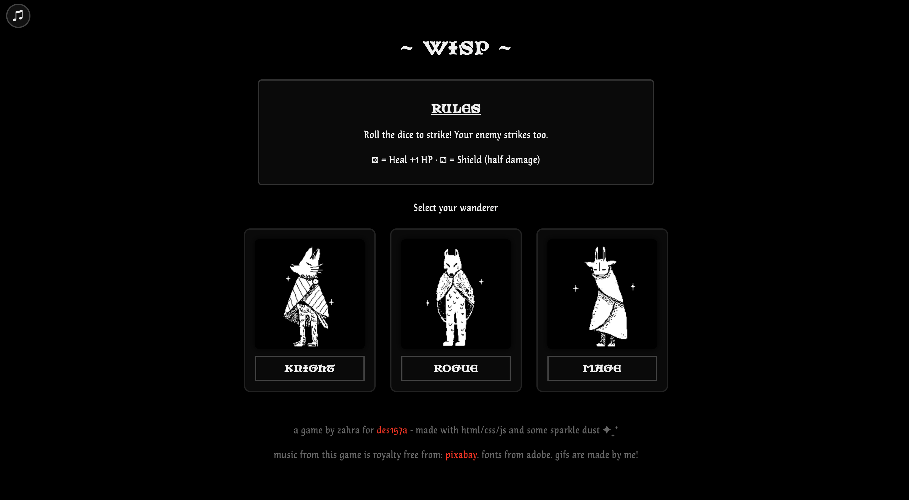
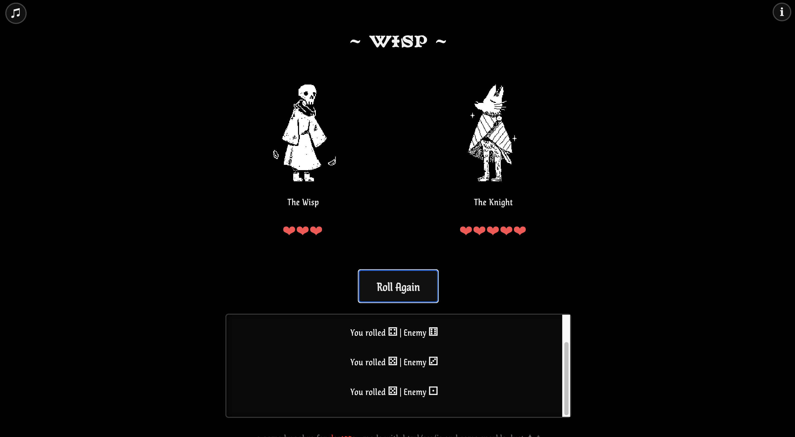
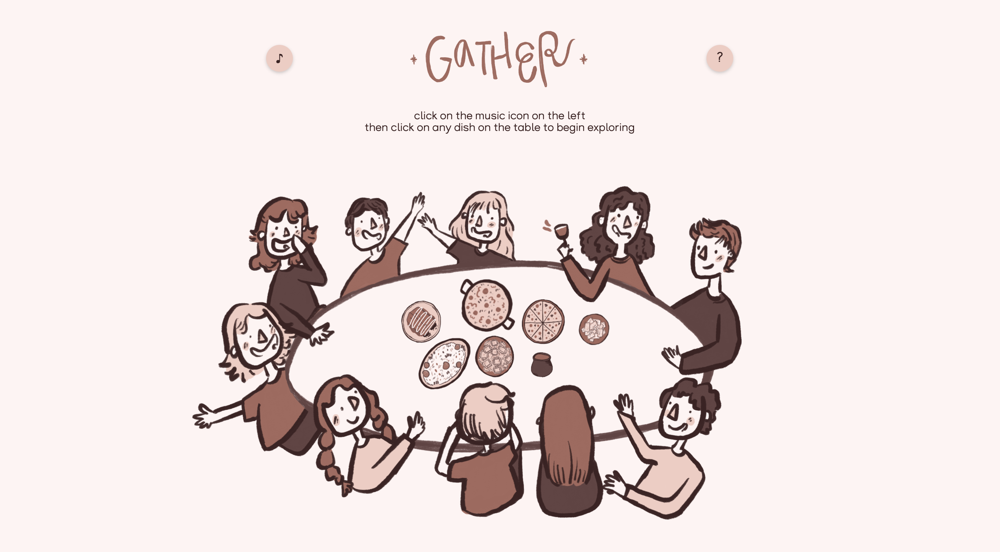
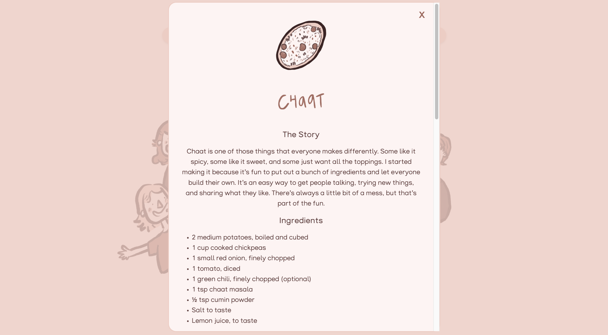
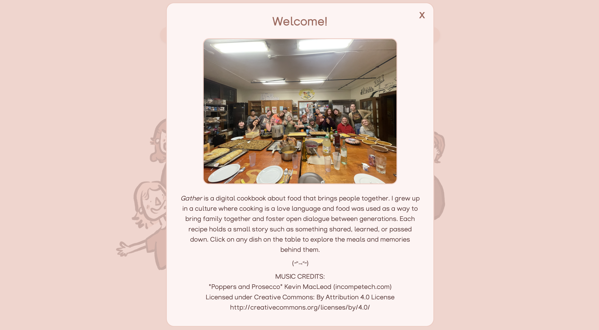
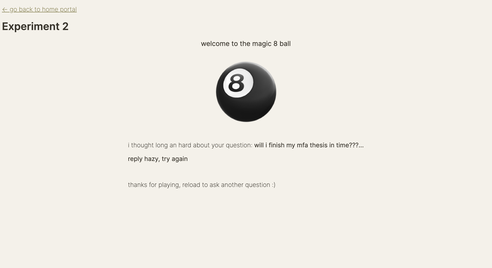

interactive media studios
student, then teacher — three years building on the web with html, css, and javascript
overview
DES 117, 157A, and 157B are UC Davis's core interactive media sequence — covering web fundamentals, front-end development, and experience design. I took the full sequence as a student, then returned as a TA for all three courses. That double perspective — knowing the curriculum from both sides — shaped how I approached teaching: I could anticipate where students got stuck and help them push past the "it's working but I don't know why" stage toward actual understanding.
Below are three projects from my time as a student, each representing a different moment in learning the medium.
wisp — browser rpg
DES 157A · final project

Wisp is a browser-based RPG built entirely in HTML, CSS, and vanilla JavaScript. Players choose a character class — knight, rogue, or mage — and enter turn-based dice combat against a wisp enemy. Each character has a different stat profile, and dice rolls trigger healing, shielding, or damage events.
The challenge was managing game state without any framework: tracking HP, turn order, and win/loss conditions through plain JS. The pixel-style GIFs, background music, and ambient sound were all created or sourced and integrated manually. The modal-based rules overlay and character selection screen were designed to feel like a real game UI despite being pure HTML.

This project was the first time I treated a web page as a system rather than a document — something with internal state that changes in response to user actions.
gather — interactive cookbook
DES 157A · every picture tells a story

Gather is a digital cookbook about food as a love language. The entry point is a hand-assembled illustration of a dining table; clicking any dish opens a modal with a recipe and a personal story behind it. An ambient music toggle sits unobtrusively in the corner.
The project was framed around the "every picture tells a story" brief — the constraint being that a single image should carry the whole narrative entry point. The table illustration does that: you understand the concept before reading a word. Each recipe modal includes both a written story and full instructions, because food without context is just a list of ingredients.


The seven dishes each have a personal narrative — from beignets learned from a Café du Monde mix to Naani's chai made by color, not timer. The design had to feel warm and domestic without being precious, which shaped every typography and layout decision.
magic 8 ball — css-only experiment
DES 157A · experiment 2 · before event listeners

This experiment was built at the point in the course before we'd learned JavaScript event listeners —
meaning all interactivity had to be driven through CSS alone: :hover, :checked,
the checkbox hack, and sibling selectors. The magic 8 ball responds to user input entirely through
CSS state.
Looking back, this constraint was one of the most useful exercises in the sequence. It forced a precise understanding of what CSS can do, and made the introduction of JS event listeners immediately legible — you understood the gap you were filling.
teaching assistant — DES 117, 157A, 157B
After completing the sequence, I TAed all three courses across multiple quarters. My responsibilities included running critique sessions, holding office hours, grading, and supporting students during in-class work time. I also helped develop assignment rubrics and contributed feedback on how projects were scoped.
Teaching this curriculum reinforced something I'd only half-understood as a student: the hardest part of learning to build for the web isn't the syntax — it's developing intuition for why something isn't working. A lot of my office hours were less about fixing code and more about teaching debugging as a method: read the error, isolate the variable, check your assumptions.
Being close to the student experience — having recently been in the same seat — made it easier to meet people where they were. I knew which parts of the DOM felt arbitrary, which CSS properties never behaved the way you expected, and which projects tended to spiral in scope. That knowledge made me a more useful TA than I could have been otherwise.